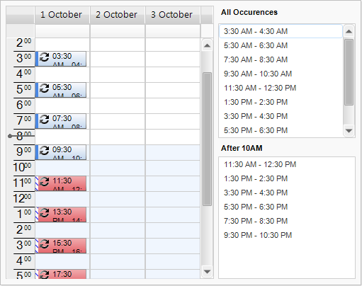

Recurrence Rule Walkthrough
Recurrence Rule Walkthrough
This example will create a single appointment, then define a recurrence
rule that occurs every two hours for ten occurrences. In the example you will
change the background and status for a subset of appointments that occur after
10AM.

In a new application, add a RadScheduler and two RadListControls to the
form. Place the RadScheduler on the left half of the form and the two
RadListControls on the right half of the form, one above the other. Name the
first list box "lcAll" and the second "lcAfter10".Add the code below to the form's Load Event handler:
[C#] Adding and traversing appointment recurrences
DateTime startDate = new DateTime(2008, 10, 1, 3, 30, 0);
// Create a sample appointment that starts at 10/1/2008 3:30 AM and lasts half an hour.
Appointment recurringAppointment = new Appointment(startDate,
TimeSpan.FromHours(1.0), "Appointment Subject");
// Create a recurrence rule to repeat the appointment every 2 hours for 10 occurrences.
HourlyRecurrenceRule rrule =
new HourlyRecurrenceRule(recurringAppointment.Start, 2, 10);
//Assign the hourly recurrence rule to the appointment
recurringAppointment.RecurrenceRule = rrule;
radScheduler1.Appointments.Add(recurringAppointment);
// iterate all appointment occurrances
foreach (IEvent ev in recurringAppointment.Occurrences)
{
lcAll.Items.Add(
new RadListDataItem(ev.Start.ToShortTimeString() + " - " +
ev.End.ToShortTimeString()));
}
// iterate only occurrances after 10am
IEnumerable<IEvent> occurrencesAfter10AM = recurringAppointment.GetOccurrences(
new DateTime(2008, 10, 1, 10, 0, 0), DateTime.Now);
foreach (IEvent ev in occurrencesAfter10AM)
{
lcAfter10.Items.Add(
new RadListDataItem(ev.Start.ToShortTimeString() + " - " +
ev.End.ToShortTimeString()));
// set the background id to "Important" and make this occurence an "Exception"
ev.BackgroundId = (int)AppointmentBackground.Important;
ev.StatusId = (int)AppointmentStatus.Tentative;
ev.MasterEvent.Exceptions.Add(ev);
}
radScheduler1.FocusedDate = startDate;
[VB.NET] Adding and traversing appointment recurrences
Dim startDate As New Date(2008, 10, 1, 3, 30, 0)
' Create a sample appointment that starts at 10/1/2008 3:30 AM and lasts half an hour.
Dim recurringAppointment As New Appointment(startDate, TimeSpan.FromHours(1.0), "Appointment Subject")
' Create a recurrence rule to repeat the appointment every 2 hours for 10 occurrences.
Dim rrule As New HourlyRecurrenceRule(recurringAppointment.Start, 2, 10)
'Assign the hourly recurrence rule to the appointment
recurringAppointment.RecurrenceRule = rrule
radScheduler1.Appointments.Add(recurringAppointment)
' iterate all appointment occurrances
For Each ev As IEvent In recurringAppointment.Occurrences
lcAll.Items.Add(New RadListDataItem(ev.Start.ToShortTimeString() & " - " & ev.End.ToShortTimeString()))
Next ev
' iterate only occurrances after 10am
Dim occurrencesAfter10AM As IEnumerable(Of IEvent) = recurringAppointment.GetOccurrences(New Date(2008, 10, 1, 10, 0, 0), Date.Now)
For Each ev As IEvent In occurrencesAfter10AM
lcAfter10.Items.Add(New RadListDataItem(ev.Start.ToShortTimeString() & " - " & ev.End.ToShortTimeString()))
' set the background id to "Important" and make this occurence an "Exception"
ev.BackgroundId = CInt(Fix(AppointmentBackground.Important))
ev.StatusId = CInt(Fix(AppointmentStatus.Tentative))
ev.MasterEvent.Exceptions.Add(ev)
Next ev
RadScheduler1.FocusedDate = startDate
- Run the application. Notice that the background and status for appointments after 10am are changed to reflect changes made to members of the collection returned by GetOccurrences().